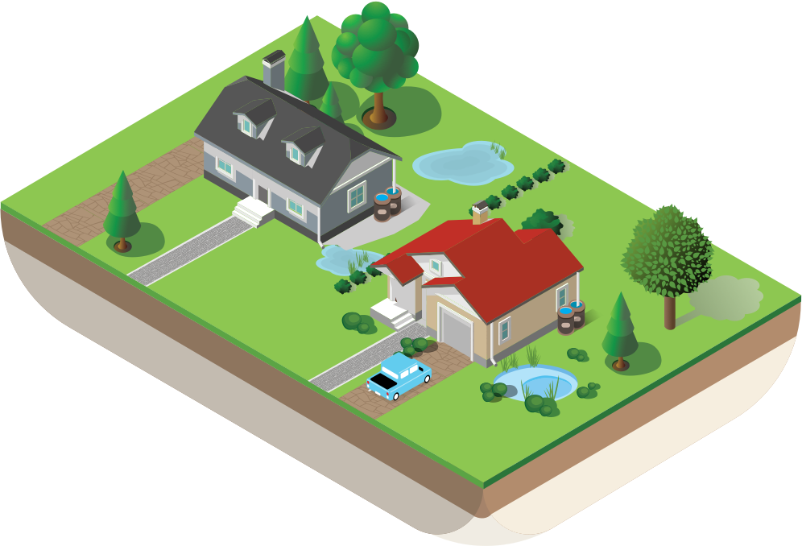

Ta tendencja nakłada się na coraz częstsze ekstremalne zjawiska klimatyczne, powodzie, ale także susze. Sytuacja staje się dwubiegunowa: raz wody jest za dużo, a za chwilę - za mało. Skutkiem są straty ekonomiczne, obniżony komfort życia, a bywa że i zagrożenie dla mieszkańców. Żeby odwrócić ten niekorzystny trend, miasto Bydgoszcz promuje tworzenie „zielonej” lub „zielono-niebieskiej” infrastruktury w celu retencji wód opadowych. Pod tym hasłem kryją się odpowiednio zaprojektowane parki, ogrody deszczowe, naturalne zbiorniki retencyjne, zrewitalizowane cieki wodne, rowy przydrożne, a także rozwiązania do zastosowań indywidualnych - przydomowych.
